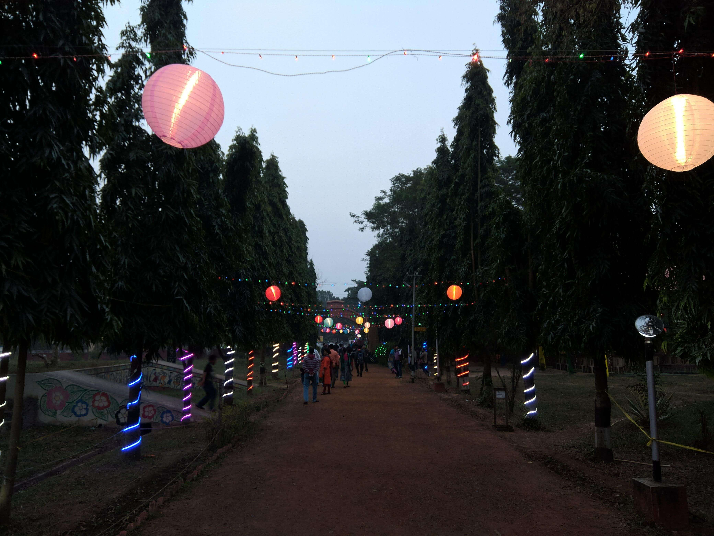
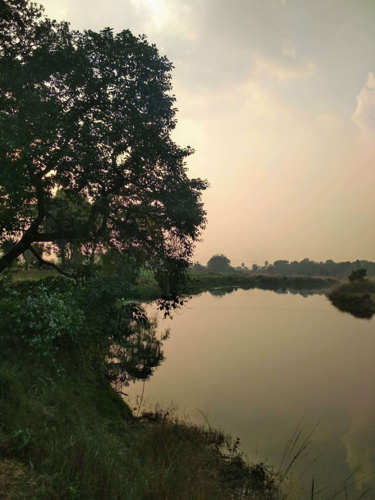
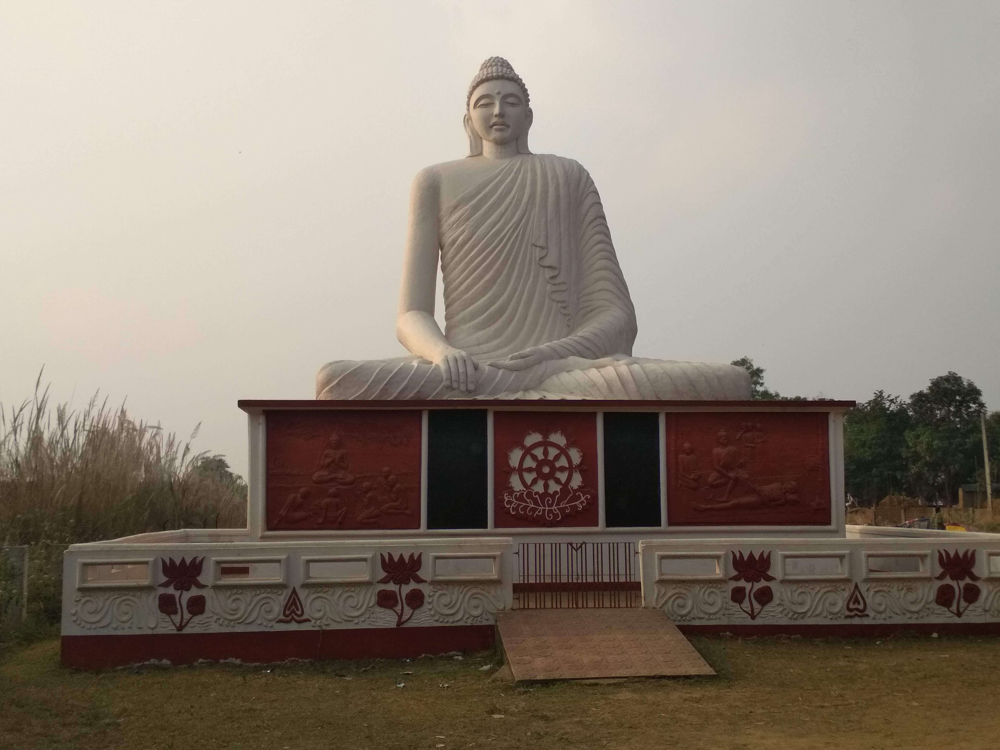

A Little Background
Santiniketan is a small town in Birbhum District, West Bengal, around 165Km away from Kolkata(The Capital of West Bengal). Rabindranath Tagore wanted to make Santiniketan as a university town and he did it.
In 1862, Maharshi Debendranath Tagore, father of Rabindranath Tagore, passing from this area, which he found to be very peaceful. He renamed it Shantiniketan, previously Shantiniketan was called Bhubandanga.
In 1863 Debendranath Tagore founded an 'Ashram' here. In the year 1901, Rabindranath Tagore established his dream of the open air school. It was named 'Patha Bhavana' and started with only five students. Later on, In 1921, this school was expanded and form the famous Vishva Bharati University. This transformation happed few years after Tagore received the first non-European Nobel Prize in Literature in 1913.
Best time to visit Santiniketan
April to June: Shantiniketan experiences extreme heat at this time. It's Better to avoid Shantiniketan at this time. Temperature cross 40*C at this time. if you are planning to come at this time, don't forget to carry sunglasses, hats, water bottles and wear light cotton.
July to September: this time Shantiniketan receives moderate rainfall. the temperature is quite pleasant this time. It's a good time to explore Shantiniketan and witness the greenery beauty of the Shantiniketan. don't forget to carry an umbrella, raincoat, and appropriate footwear.
October to February: Winter season is the best time to visit Shantiniketan. The temperature ranges from 13*C to 29*C. the weather remains pleasantly cool all through the day. make sure your bookings are done in advance and don't forget to carry warm clothes.
Avoid Wednesday, because On Wednesday most of the places are closed in Shantiniketan.
Day by day plan
Day 1 | Starting Point Kolkata
Try reaching around 11 AM and checked into your hotel.
Booking a local Toto for side seen is the most pocket friendly option.
Visit Bangladesh Bhavan (closed on Wednesday and Thursday) which is around 2.1 km away from the Santiniketan main city.
Visit Ballavpur Wildlife Sanctuary & Deer Park (closed on Wednesday) which is around 3.9km away from Bangladesh Bhavan.
Visit Srijani Shilpagram which is around 2km away from Ballavpur Wildlife Sanctuary.

Srijani Shilpagram
Have your Launch (Recommended to have authentic Bengali food).
Visit Visva-Bharati campus , Visva-Bharati Museums , Kala Bhavan.
Don't remove the Visva-Bharati campus, Visva-Bharati Museums, Kala Bhavan from your Santiniketan checklist. It's a must visit place.
Day 2 | Exploring Shantiniketan
Visit Kankalitala Mandir in the early morning. it's one of the most visited religious places in Shantiniketan.
Have your breakfast.
Visit Kopai River , which is around 5 km away from the Kankalitala Mandir.

Kopai River
Visit Biswa Bangla Haat , which is around 9 km away from the Kopai River.
Visit Sonajhuri Haat or Sonibarer Haat , which is around 2 km away from the Biswa Bangla Haat. it's the best place for shopping.
Visit Prakriti Bhavan , which is around 1 km away from Sonajhuri Haat.
Visit 34 feet Buddha Statue , is just 400 meter from Prakriti Bhavan.

34 feet Buddha Statue
Visit Amar Kutir Society , which is around 3 km away from the Buddha statue.
Visit Amar Kutir Eco Tourism Park.
Day 3 | Back to Kolkata
Visit Geetanjali Rail Museum (closed on Wednesday), which opposite the Bolpur rail station.
Back to Kolkata
Where to stay in Shantiniketan
Homestay and resorts are easily available in Shantiniketan.
If you are looking for a peaceful environment, then you can try Prokriti Bon Bungalow.
OYO Rooms are also available here, you can try
OYO 37034 Dreamz Khoyai Resort
OYO 30449 Green Chilli
If you are looking for a resort, then Ram Shyam Village Resort is a good option for you.
Budget travelers can try
all these hotels are at a good location and service is also good.
Food options
For authentic Bengali food, try Bonolakshmi (you have to place an order 1day pioneer or the same day before 8 AM).
Try Ram Shyam Restaurant for authentic Bengali food(Recommended Desi Chicken).
For Snacks, try Kasahara - The Cafe, they offer delicious food.
For continental food, try Nola Food Boutique .
You can also try Aarhani Restaurant, Ghare Baire Restaurant